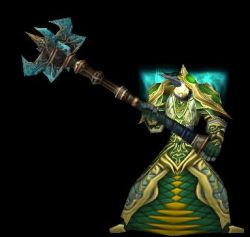

Les légendes de Kirin Tor
==> Afficher les personnages de Léto
Léto
Age : 140
Sexe : Homme
Race : Elfe
Faction : Alliance
Formation : Druide
Description :
Alors ... Je suis né au Nordrassil , d'un druide et d'une prêtresse , tout les deux de familles nobles. Mon enfance n'a rien eu d'heureuse , j'ai toujours été promené entre la région que l'on nomme à présent "Hyjal" et Silithus , tout au sud du Kalimdor.
Aah , Silithus ... J'y suis lié , décidément. Etant adolescent , et déja un preux guerrier , j'ai participer à la guerre des sables avec cet imbécile de Fandral Forteramure. Qu'est-ce que j'aurais aimer l'assassiner pendant la nuit , vous ne savez pas à quel point ... Et son fils à hériter de sa bêtise qui plus est.
M'enfin , c'est une autre histoire que je vous conterais plus tard.
Plus tard , bien après la Guerre du Silithus , je me suis exiler aux Maleterres de l'est , bien après leurs corruptions. Et j'ai observer , observer pendant des années cette nécropole. Domaine du Servant du Roi-Liche , Kel'Thuzad. J'y notais toute les informations sur sa structure , l'entrée , les cris qu'on y entendaient ... Ils semblaient venir de l'est de la Necropole , on pouvait y apercevoir une grande statue ( En était-ce une ? ) d'un homme , et deux serviteurs , qui criaient sans cesse "Feugen veut maître heureux !" et " Stalagg , TUE !" , je suppose que c'était leurs noms ...
Ayant ensuite entendu plus tard que les Portes d'Ahn'Qiraj avaient été réouverte ... Vous vous rendez compte ?! Ces portes qu'on a eu tant de mal a fermer ! ... Bref. Je disais. Je me suis dirigé vers Anachronos , rejeton de Nozdormu , pour des explications. Celui-ça ne m'a seulement dit qu'il était désolé. Cependant , il a dit aussi que la magie émanant d'un bout de baton dans mon sac était très agé et émanait une puissante magie arcanique. Pour le réparer , il m'a dit d'explorer la Nécropole et le Temple d'Ahn'Qiraj , ainsi que de lui ramener des millions de carapaces de ses insectes que l'on nomme "Silithide".
...
Plus d'infos sur Léto >>>